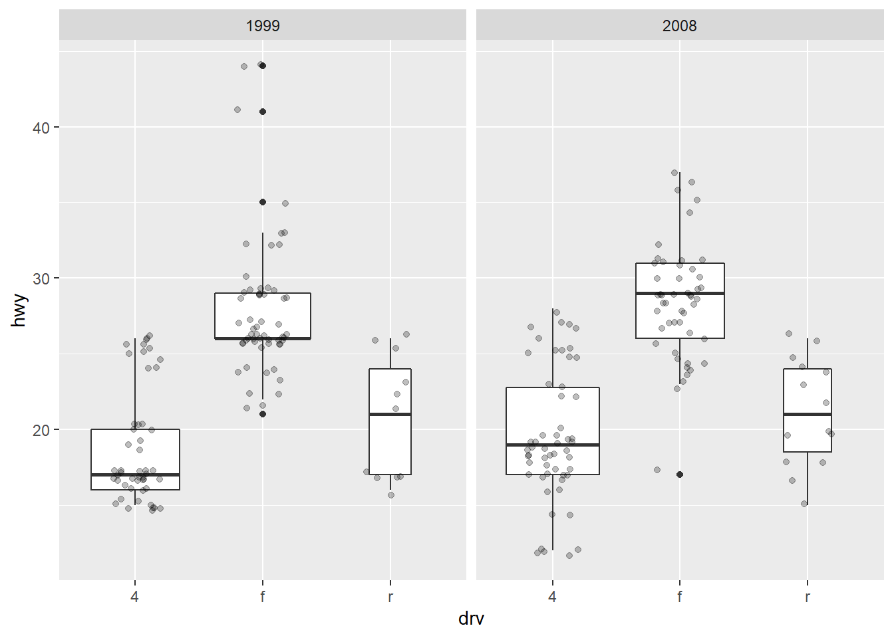
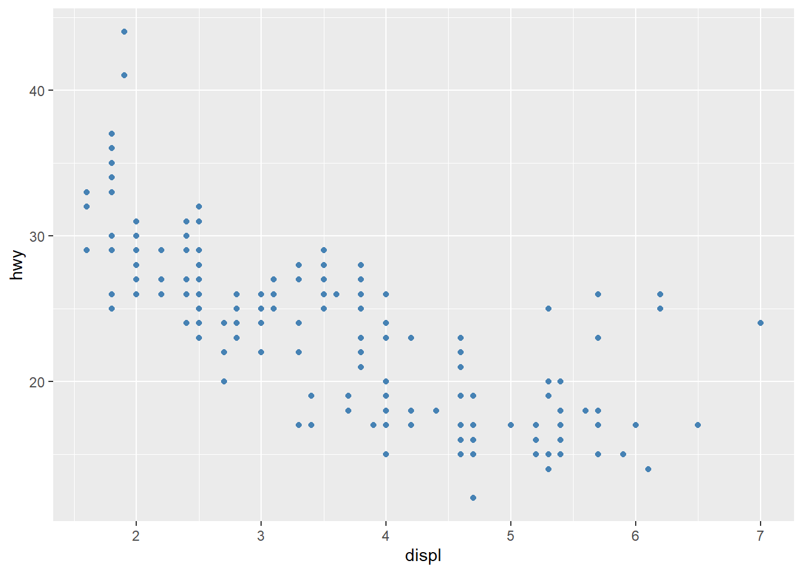
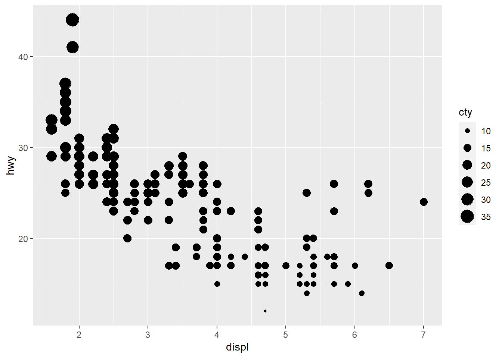
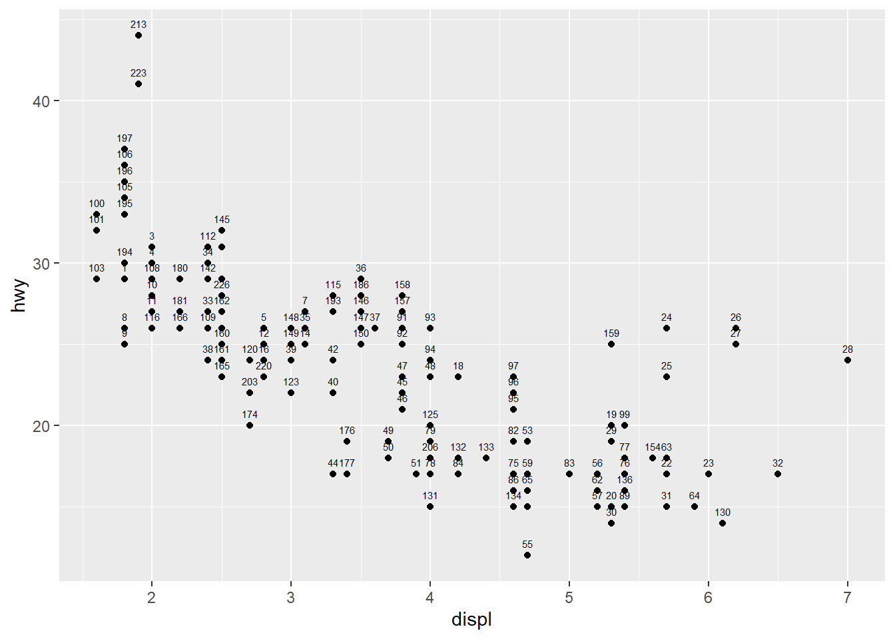
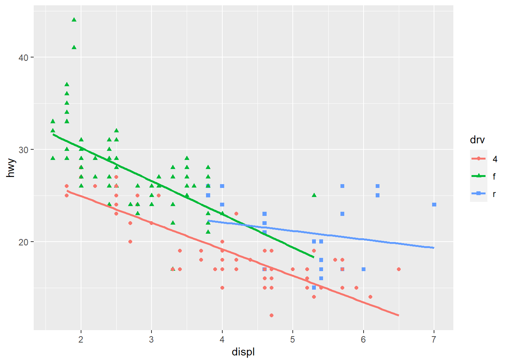

Chapter 5 Create plots with {ggplot2}
In the following sections we will show how to draw the following plots:
- scatter plot
- line plot
- histogram
- density plot
- boxplot
- barplot
In order to focus on the construction of the different plots and the use of {ggplot2}, we will restrict ourselves to drawing basic (yet beautiful) plots without unnecessary layers. For the sake of completeness, we will briefly discuss and illustrate different layers to further personalize a plot at end of this section.
Note that if you still struggle to create plots with {ggplot2} after reading this tutorial, you may find the {esquisse} addin useful.
This addin allows you to interactively (that is, by dragging and dropping variables) create plots with the {ggplot2} package. Give it a try!
5.1 Scatter plot
We start by creating a scatter plot using geom_point. Remember that a scatter plot is used to visualize the relation between two quantitative variables].
- We start by specifying the data:
ggplot(dat) # data
- Then we add the variables to be represented with the
aes()function:
ggplot(dat) + # data
aes(x = displ, y = hwy) # variables
- Finally, we indicate the type of plot:
ggplot(dat) + # data
aes(x = displ, y = hwy) + # variables
geom_point() # type of plot
You will also sometimes see the aesthetic elements (aes() with the variables) inside the ggplot() function in addition to the dataset:
ggplot(mpg, aes(x = displ, y = hwy)) +
geom_point()
This second method gives the exact same plot than the first method. I tend to prefer the first method over the second for better readability, but this is more a matter of taste so the choice is up to you.
5.2 Line plot
Line plots, particularly useful in time series or finance, can be created similarly but by using geom_line():
ggplot(dat) +
aes(x = displ, y = hwy) +
geom_line()5.3 Combination of line and points
An advantage of {ggplot2} is the ability to combine several types of plots and its flexibility in designing it. For instance, we can add a line to a scatter plot by simply adding a layer to the initial scatter plot:
ggplot(dat) +
aes(x = displ, y = hwy) +
geom_point() +
geom_line() # add line5.4 Histogram
A histogram (useful to visualize distributions and detect potential outliers can be plotted using geom_histogram():
ggplot(dat) +
aes(x = hwy) +
geom_histogram()
By default, the number of bins is equal to 30. You can change this value using the bins argument inside the geom_histogram() function:
ggplot(dat) +
aes(x = hwy) +
geom_histogram(bins = sqrt(nrow(dat)))Here I specify the number of bins to be equal to the square root of the number of observations (following Sturge’s rule) but you can specify any numeric value.
5.5 Density plot
Density plotscan be created using geom_density():
ggplot(dat) +
aes(x = hwy) +
geom_density()5.6 Combination of histogram and densities
We can also superimpose a histogram and a density curve on the same plot:
ggplot(dat) +
aes(x = hwy, y = ..density..) +
geom_histogram() +
geom_density()
Or superimpose several densities:
ggplot(dat) +
aes(x = hwy, color = drv, fill = drv) +
geom_density(alpha = 0.25) # add transparencyThe argument alpha = 0.25 has been added for some transparency. More information about this argument can be found in at the end.
5.7 Boxplot
A boxplot (also very useful to visualize distributions and detect potential outliers can be plotted using geom_boxplot():
# Boxplot for one variable
ggplot(dat) +
aes(x = "", y = hwy) +
geom_boxplot()# Boxplot by factor
ggplot(dat) +
aes(x = drv, y = hwy) +
geom_boxplot()
It is also possible to plot the points on the boxplot with geom_jitter(), and to vary the width of the boxes according to the size (i.e., the number of observations) of each level with varwidth = TRUE:
ggplot(dat) +
aes(x = drv, y = hwy) +
geom_boxplot(varwidth = TRUE) + # vary boxes width according to n obs.
geom_jitter(alpha = 0.25, width = 0.2) # adds random noise and limit its widthThe geom_jitter() layer adds some random variation to each point in order to prevent them from overlapping (an issue known as overplotting).1 Moreover, the alpha argument adds some transparency to the points to keep the focus on the boxes and not on the points.
Finally, it is also possible to divide boxplots into several panels according to the levels of a qualitative variable:
ggplot(dat) +
aes(x = drv, y = hwy) +
geom_boxplot(varwidth = TRUE) + # vary boxes width according to n obs.
geom_jitter(alpha = 0.25, width = 0.2) + # adds random noise and limit its width
facet_wrap(~year) # divide into 2 panels
For a visually more appealing plot, it is also possible to use some colors for the boxes depending on the x variable:
ggplot(dat) +
aes(x = drv, y = hwy, fill = drv) + # add color to boxes with fill
geom_boxplot(varwidth = TRUE) + # vary boxes width according to n obs.
geom_jitter(alpha = 0.25, width = 0.2) + # adds random noise and limit its width
facet_wrap(~year) + # divide into 2 panels
theme(legend.position = "none") # remove legendIn that case, it best to remove the legend as it becomes redundant. See more information about the legend later on.
If you are unhappy with the default colors provided in {ggplot2}, you can change them manually with the scale_fill_manual() layer:
ggplot(dat) +
aes(x = drv, y = hwy, fill = drv) + # add color to boxes with fill
geom_boxplot(varwidth = TRUE) + # vary boxes width according to n obs.
geom_jitter(alpha = 0.25, width = 0.2) + # adds random noise and limit its width
facet_wrap(~year) + # divide into 2 panels
theme(legend.position = "none") + # remove legend
scale_fill_manual(values = c("darkred", "darkgreen", "steelblue")) # change fill color manually5.8 Barplot
A barplot (useful to visualize qualitative variables) can be plotted using geom_bar():
ggplot(dat) +
aes(x = drv) +
geom_bar()
By default, the heights of the bars correspond to the observed frequencies for each level of the variable of interest (drv in our case).
Again, for a more appealing plot, we can add some colors to the bars with the fill argument:
ggplot(dat) +
aes(x = drv, fill = drv) + # add colors to bars
geom_bar() +
theme(legend.position = "none") # remove legendWe can also create a barplot with two qualitative variables:
ggplot(dat) +
aes(x = drv, fill = year) + # fill by years
geom_bar()In order to compare proportions across groups, it is best to make each bar the same height using position = "fill":
ggplot(dat) +
geom_bar(aes(x = drv, fill = year), position = "fill")To draw the bars next to each other for each group, use position = "dodge":
ggplot(dat) +
geom_bar(aes(x = drv, fill = year), position = "dodge")5.9 Further personalization
5.9.1 Title and axis labels
The first things to personalize in a plot is the labels to make the plot more informative to the audience. We can easily add a title, subtitle, caption and edit axis labels with the labs() function:
p <- ggplot(dat) +
aes(x = displ, y = hwy) +
geom_point()
p + labs(
title = "Fuel efficiency for 38 popular models of car",
subtitle = "Period 1999-2008",
caption = "Data: ggplot2::mpg. See more at statsandr.com",
x = "Engine displacement (litres)",
y = "Highway miles per gallon (mpg)"
)As you can see in the above code, you can save one or more layers of the plot in an object for later use. This way, you can save your “main” plot, and add more layers of personalization until you get the desired output. Here we saved the main scatter plot in an object called p and we will refer to it for the subsequent personalizations.
You can also edit the alignment, the size and the shape of the title and subtitle via the theme() layer and the element_text() function:
p + labs(
title = "Fuel efficiency for 38 popular models of car",
subtitle = "Period 1999-2008",
caption = "Data: ggplot2::mpg. See more at statsandr.com",
x = "Engine displacement (litres)",
y = "Highway miles per gallon (mpg)"
) +
theme(
plot.title = element_text(
hjust = 0.5, # center
size = 12,
color = "steelblue",
face = "bold"
),
plot.subtitle = element_text(
hjust = 0.5, # center
size = 10,
color = "gray",
face = "italic"
)
)If the title or subtitle is long and you want to divide it into multiple lines, use \n:
p + labs(
title = "Fuel efficiency for 38 popular \n models of car",
subtitle = "Period 1999-2008",
caption = "Data: ggplot2::mpg. See more at statsandr.com",
x = "Engine displacement (litres)",
y = "Highway miles per gallon (mpg)"
) +
theme(
plot.title = element_text(
hjust = 0.5, # center
size = 12,
color = "steelblue",
face = "bold"
),
plot.subtitle = element_text(
hjust = 0.5, # center
size = 10,
color = "gray",
face = "italic"
)
)5.9.2 Axis ticks
Axis ticks can be adjusted using scale_x_continuous() and scale_y_continuous() for the x and y-axis, respectively:
# Adjust ticks
p + scale_x_continuous(breaks = seq(from = 1, to = 7, by = 0.5)) + # x-axis
scale_y_continuous(breaks = seq(from = 10, to = 45, by = 5)) # y-axis5.9.3 Log transformations
In some cases, it is useful to plot the log transformation of the variables. This can be done with the scale_x_log10() and scale_y_log10() functions:
p + scale_x_log10() +
scale_y_log10()5.9.4 Limits
The most convenient way to control the limits of the plot is to use again the scale_x_continuous() and scale_y_continuous() functions in addition to the limits argument:
p + scale_x_continuous(limits = c(3, 6)) +
scale_y_continuous(limits = c(20, 30))It is also possible to simply take a subset of the dataset with the subset() or filter() function. See how to subset a dataset if you need a reminder.
5.9.5 Legend
By default, the legend is located to the right side of the plot (when there is a legend to be displayed of course). To control the position of the legend, we need to use the theme() function in addition to the legend.position argument:
p + aes(color = class) +
theme(legend.position = "top")Replace "top" by "left" or "bottom" to change its position and by "none" to remove it.
The title of the legend can be edited with the labs() layer:
p + aes(color = class) +
labs(color = "Car's class")Note that the argument inside labs() must match the one inside the aes() layer (in this case: color).
The title of the legend can also be removed with legend.title = element_blank() inside the theme() layer:
p + aes(color = class) +
theme(
legend.title = element_blank(),
legend.position = "bottom"
)The legend now appears at the bottom of the plot, without the legend title.
5.9.6 Shape, color, size and transparency
There are a very large number of options to improve the quality of the plot or to add additional information. These include:
- shape,
- size,
- color, and
- alpha (transparency).
We can for instance change the shape of all points in a scatter plot by adding shape to geom_point(), or vary the shape according to the values taken by another variable (in that case, the shape argument must be inside aes()):2
# Change shape of all points
ggplot(dat) +
aes(x = displ, y = hwy) +
geom_point(shape = 4)# Change shape of points based on a categorical variable
ggplot(dat) +
aes(x = displ, y = hwy, shape = drv) +
geom_point()Following the same principle, we can modify the color, size and transparency of the points based on a qualitative or quantitative variable. Here are some examples:
p <- ggplot(dat) +
aes(x = displ, y = hwy) +
geom_point()
# Change color for all points
p + geom_point(color = "steelblue")
# Change color based on a qualitative variable
p + aes(color = drv)
# Change color based on a quantitative variable
p + aes(color = cty)
# Change color based on a criterion (median of cty variable)
p + aes(color = cty > median(cty))# Change size of all points
p + geom_point(size = 4)# Change size of points based on a quantitative variable
p + aes(size = cty)
# Change transparency based on a quantitative variable
p + aes(alpha = cty)We can of course mix several options (shape, color, size, alpha) to build more complex graphics:
p + geom_point(size = 0.5) +
aes(color = drv, shape = year, alpha = cty)If you are unhappy with the default colors, you can change them manually with the scale_colour_manual() layer (for qualitative variables) and the scale_coulour_gradient2() layer (for quantitative variables):
# Change color based on a qualitative variable
p + aes(color = drv) +
scale_colour_manual(values = c("red", "blue", "green"))# Change color based on a quantitative variable
p + aes(color = cty) +
scale_colour_gradient2(
low = "green",
mid = "gray",
high = "red",
midpoint = median(dat$cty)
)5.9.7 Text and labels
To add a label on a point (for example the row number), we can use the geom_text() and aes() functions:
p + geom_text(aes(label = rownames(dat)),
check_overlap = TRUE,
size = 2,
vjust = -1
)
To add text on the plot, we use the annotate() function:
p + annotate("text",
x = 6,
y = 40,
label = "hwy and displ are \n negatively correlated \n (rho = -0.77, p-value < 0.001)",
size = 3
)5.9.8 Smooth and regression lines
In a scatter plot, it is possible to add a smooth line fitted to the data:
p + geom_smooth()
In the context of simple linear regression, it is often the case that the regression line is displayed on the plot. This can be done by adding method = lm (lm stands for linear model) in the geom_smooth() layer:
p + geom_smooth(method = lm)
It is also possible to draw a regression line for each level of a categorical variable:
p + aes(color = drv, shape = drv) +
geom_smooth(method = lm, se = FALSE)
The se = FALSE argument removes the confidence interval around the regression lines.
5.9.9 Facets
facet_grid allows you to divide the same graphic into several panels according to the values of one or two qualitative variables:
# According to one variable
p + facet_grid(. ~ drv)
# According to 2 variables
p + facet_grid(drv ~ year)It is then possible to add a regression line to each facet:
p + facet_grid(. ~ drv) +
geom_smooth(method = lm)5.9.10 Themes
Several functions are available in the {ggplot2} package to change the theme of the plot. The most common themes after the default theme (i.e., theme_gray()) are the black and white (theme_bw()), minimal (theme_minimal()) and classic (theme_classic()) themes:
# Black and white theme
p + theme_bw()# Minimal theme
p + theme_minimal()# Classic theme
p + theme_classic()I tend to use the minimal theme for most of my R Markdown reports as it brings out the patterns and points and not the layout of the plot, but again this is a matter of personal taste. See more themes at ggplot2.tidyverse.org/reference/ggtheme.html and in the {ggthemes} package.
In order to avoid having to change the theme for each plot you create, you can change the theme for the current R session using the theme_set() function as follows:
theme_set(theme_minimal())5.9.11 Interactive plot with {plotly}
You can easily make your plots created with {ggplot2} interactive with the {plotly} package:
library(plotly)
ggplotly(p + aes(color = year))You can now hover over a point to display more information about that point. There is also the possibility to zoom in and out, to download the plot, to select some observations, etc. More information about {plotly} for R can be found here.
5.9.12 Combine plots with {patchwork}
There are several ways to combine plots made in {ggplot2}. In my opinion, the most convenient way is with the {patchwork} package using symbols such as +, / and parentheses.
We first need to create some plots and save them:
p_a <- ggplot(dat) +
aes(x = displ, y = hwy) +
geom_point()
p_b <- ggplot(dat) +
aes(x = hwy) +
geom_histogram()
p_c <- ggplot(dat) +
aes(x = drv, y = hwy) +
geom_boxplot()Now that we have 3 plots saved in our environment, we can combine them. To have plots next to each other simply use the + symbol:
library(patchwork)
p_a + p_b + p_cTo display them above each other simply use the / symbol:
p_a / p_b / p_cAnd finally, to combine them above and next to each other, mix +, / and parentheses:
p_a + p_b / p_c(p_a + p_b) / p_cSee more ways to combine plots with:
grid.arrange()from the{gridExtra}packageplot_grid()from the{cowplot}package
5.9.13 Flip coordinates
Flipping coordinates of your plot is useful to create horizontal boxplots, or when labels of a variable are so long that they overlap each other on the x-axis. See with and without flipping coordinates below:
# without flipping coordinates
p1 <- ggplot(dat) +
aes(x = class, y = hwy) +
geom_boxplot()
# with flipping coordinates
p2 <- ggplot(dat) +
aes(x = class, y = hwy) +
geom_boxplot() +
coord_flip()
library(patchwork)
p1 + p2 # left: without flipping, right: with flippingThis can be done with many types of plot, not only with boxplots. For instance, if a categorical variable has many levels or the labels are long, it is usually best to flip the coordinates for a better visual:
ggplot(dat) +
aes(x = class) +
geom_bar() +
coord_flip()5.9.14 Save plot
The ggsave() function will save the most recent plot in your current working directory unless you specify a path to another folder:
ggplot(dat) +
aes(x = displ, y = hwy) +
geom_point()
ggsave("plot1.pdf")You can also specify the width, height and resolution (dpi) as follows:
ggsave("plot1.pdf",
width = 12,
height = 12,
units = "cm",
dpi = 300
)5.9.15 Managing dates
If the time variable in your dataset is in date format, the {ggplot2} package recognizes the date format and automatically uses a specific type for the axis ticks.
There is no time variable with a date format in our dataset, so let’s create a new variable of this type thanks to the as.Date() function:
dat$date <- as.Date("2020-08-21") - 0:(nrow(dat) - 1)See the first 6 observations of this date variable and its class:
head(dat$date)## [1] "2020-08-21" "2020-08-20" "2020-08-19" "2020-08-18" "2020-08-17" "2020-08-16"str(dat$date)## Date[1:234], format: "2020-08-21" "2020-08-20" "2020-08-19" "2020-08-18" "2020-08-17" "2020-08-16" ...The new variable date is correctly specified in a date format.
Most of the time, with a time variable, we want to create a line plot with the date on the X-axis and another continuous variable on the Y-axis, like the following plot for example:
p <- ggplot(dat) +
aes(x = date, y = hwy) +
geom_line()
pAs soon as the time variable is recognized as a date, we can use the scale_x_date() layer to change the format displayed on the X-axis. The following table shows the most frequent date formats:
Run ?strptime() to see many more date formats available in R.
For this example, let’s add the year in addition to the unabbreviated month:
p + scale_x_date(date_labels = "%B %Y")It also possible to control the breaks to display on the X-axis with the date_breaks argument. For this example, let’s say we want to display the day as number and the abbreviated month for each interval of 10 days:
p + scale_x_date(date_breaks = "10 days", date_labels = "%d %b")If labels displayed on the X-axis are unreadable because they overlap each other, you can rotate them with the theme() layer and the angle argument:
p + scale_x_date(date_breaks = "10 days", date_labels = "%d %b") +
theme(axis.text.x = element_text(angle = 60, hjust = 1))Use the
geom_jitter()layer with caution because, although it makes a plot more revealing at large scales, it also makes it slightly less accurate at small scales since some randomness is added to the points.↩︎There are (at the time of writing) 26 shapes accepted in the
shapeargument. See this documentation for all available shapes.↩︎